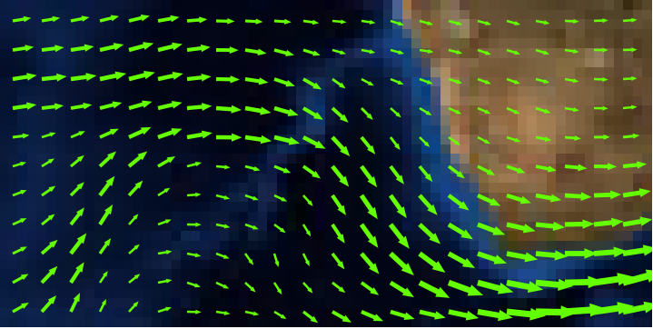

MS RFC 78: Vector Field Rendering (CONNECTIONTYPE UVRASTER)¶
- Date:
2011/11/04
- Author:
Alan Boudreault
- Contact:
aboudreault at mapgears.com
- Status:
Adopted on 2011-11-24. Implementation completed.
- Version:
MapServer 6.2
1. Overview¶
This is a proposal to add the ability to render vector field layers in MapServer. Vector fields are used for instance in meteorology to store/display wind direction and magnitude.
The source is two bands of raster data, one band represents the U component of the vector, and the 2nd band the V component. Using the u,v values at a given location we can compute a rotation and magnitude and use that to draw an arrow of a size proportional to the magnitude and pointing in the direction of the phenomenon (wind, current, etc.)
For more details about vector fields, refer to: https://en.wikipedia.org/wiki/Vector_field
Visual example (rendered with MapServer):

2. The proposed solution¶
This RFC proposes the addition of a new type of layer in MapServer: CONNECTIONTYPE UVRASTER. The new type is a hybrid layer, which has a raster data source as input and vector features as output. Initially, only the point representation of those vector features will be supported. Also, queries won’t be supported in this phase.
Since the data source is a raster, all raster processing options can be used (e.g. RESAMPLE). After a few tests, we determined that the best results (for all different zoom levels) for vector fields were when using RESAMPLE=AVERAGE and this will be set by default for UV layers unless another type of resampling is explicitly specified in the layer definition.
To render a vector field layer, we need to define a layer in the mapfile with the following options:
Set the layer TYPE to POINT.
Set CONNECTIONTYPE to UVRASTER.
Set the DATA to the raster file that contains u/v bands.
Specify the 2 bands to use as u and v.
Specify a class to render the point features.
Optional “PROCESSING” settings:
UV_SPACING: The spacing is simply the distance, in pixels, between arrows to be displayed in the vector field. Default is 32.
UV_SIZE_SCALE: The uv size scale is used to convert the vector lengths (magnitude) of the raster to pixels for a better rendering. Default is 1.
The UVRASTER layer has 4 attribute bindings that can be used in the layer definition and/or class expressions:
[u]: the raw u value
[v]: the raw v value
[uv_angle]: the vector angle
[uv_length]: the vector length (scaled with the UV_SIZE_SCALE option value)
Example of a layer definition:
LAYER
NAME "my_uv_layer"
TYPE POINT
STATUS DEFAULT
CONNECTIONTYPE UVRASTER
DATA /mnt/data/raster/grib/wind.grib2
PROCESSING "BANDS=1,2"
PROCESSING "UV_SPACING=40"
PROCESSING "UV_SIZE_SCALE=0.2"
CLASS
STYLE
ANGLE [uv_angle]
SYMBOL "arrow"
SIZE [uv_length]
COLOR 255 0 0
POSITION CC
MINSIZE 5
END
END
3. Implementation Details¶
Internally, a UVRASTER layer will have its own renderer/driver code. It’s a hybrid layer because it reads the raster source as a normal raster layer does, but all other functions behave like a vector layer. The layer can be drawn as a normal point layer using whichShape, GetShape etc.
Basic internal draw process of a UVRASTER layer:
whichShape() is called: the raster data source is read using the internal GDAL functions, resample and all other raster options are applied and the u,v pixels result is stored in the internal layer structure.
getShape() is called: loop through the raster pixels and returns a shapeObj (Point) created with the pixel location.
MapServer draws its point feature as any other vector layer.
3.1 Files affected¶
The following files will be modified/created by this RFC:
mapserver.h/mapfile.c (Connection type UVRASTER support in the mapfile)
mapuvraster.c (new file for the UVRASTER renderer)
maplayer.c (new layer type handling, virtual tables init etc.)
maplexer.l (add additional UVRASTER keyword)
3.2 MapScript¶
No issue for any MapScript bindings. The UVRASTER layer is handled/rendered internally as any other layer..
3.4 Backwards Compatibility Issues¶
This change provides a new functionality with no backwards compatibility issues being considered.
4. Bug ID¶
5. Voting history¶
+1 from Jeff, Olivier, Assefa, Perry, FrankW, Daniel, Stephen, Michael, Thomas, Tom and Steve.